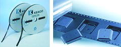
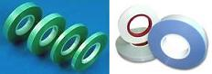
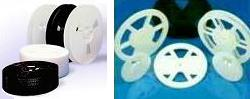

Tape and Reel
Tape and Reel
is a process of packing surface mount devices (SMD's) by loading them into
individual pockets comprising what is known as a
pocket
tape or
carrier tape.
The units are sealed in the carrier tape with a
cover tape, usually by
heat or pressure. The carrier tape is wound around a
reel for convenient
handling and transport.
The reel is enclosed in a reel box before it is finally shipped to the
customer.
Packing
units by Tape and Reel also facilitates automated retrieval and mounting
of the components on the application board during customer manufacturing.
Taping and reeling of SMD's is the counterpart of packing non-SMD's in
tubes.

Fig. 1.
Photos of Carrier Tapes
Tape
and reel is a relatively simple process but nonetheless has certain
requirements that need to be met to ensure successful packing of the
units. The
physical and
electrical properties of the tape and reel materials used are important to
prevent loading/unloading problems and ESD failures.
For instance, the materials used in the carrier tape, cover tape,
and even reels should be antistatic, if not static dissipative. The
ability of these materials to withstand severe environmental conditions
(temperature and humidity) for a predefined duration must also be
considered.

Fig. 2.
Photos of Cover Tapes
Peel back strength,
which is the force needed to peel open the cover tape, must also meet a
lower and an upper limit. Depending on the width of the carrier tape, the
peel back strength requirement may be as low as a few grams to more than a
hundred grams. Peel
back strength testing is often done at room temperature, with the pulling
action performed at a predefined angle and peel-off speed.

Fig. 3.
Photos of Reels
Another critical parameter is the
direction of feed,
which is defined as the direction in which the end customer unreels the
carrier tape. Aside from the direction of feed, the pin 1 orientation of
the units with respect to the carrier tape is also critical as any error
may result in units being mounted improperly on the boards.
The
leader
is an extra length of empty pockets run after the reel has been filled
with the correct number of parts. The leader must meet a minimum length.
The
trailer,
on the other hand, is an extra length of empty pockets run prior to
filling any pockets with components. This must also meet a minimum length.
One end of the trailer is attached to the
reel hub.


Figure 4.
Examples of Tape and Reel Equipment
Test Links:
Electrical
Test;
Burn-in;
Marking;
Tape
and Reel;
Dry
Packing;
Boxing
and Labeling
See Also:
Strip Testing; IC
Manufacturing; Test Equipment
HOME
Copyright
©
2001-2006
www.EESemi.com.
All Rights Reserved.